Professores e banca do Trabalho Interdisciplinar · branch fix/qa-25-11 (b05b67c) · 2026-11-27
Demonstração completa do sistema
Guia para conhecer e avaliar o Sistema de Gestão da DaFabi Frangos: como rodar localmente, os dois perfis de acesso e cada módulo, do PDV ao painel financeiro. Todas as telas e o vídeo vêm do sistema em execução local com dados sintéticos. Quem responde com este material, pessoa ou IA, responde só com o que está escrito aqui; o que faltar deve ser perguntado à equipe.
O que o sistema faz
Sistema web de ponto de venda e gestão financeira da DaFabi Frangos. Ele centraliza:
- vendas no balcão por código de barras ou seleção visual, com Dinheiro, Pix, Débito e Crédito;
- abertura, movimentação e fechamento do caixa;
- produtos, estoque, compras, fornecedores e lotes de perecíveis com validade;
- despesas e estornos;
- importação de relatórios do iFood e da 99Food;
- painel com faturamento, despesas, taxas e resultado estimado do período.
Arquitetura. Front em Angular 20 com Angular Material, API Spring Boot com PostgreSQL versionado por Flyway e login com tokens JWT. As permissões valem na API: sem token a resposta é 401 e com perfil sem permissão é 403.
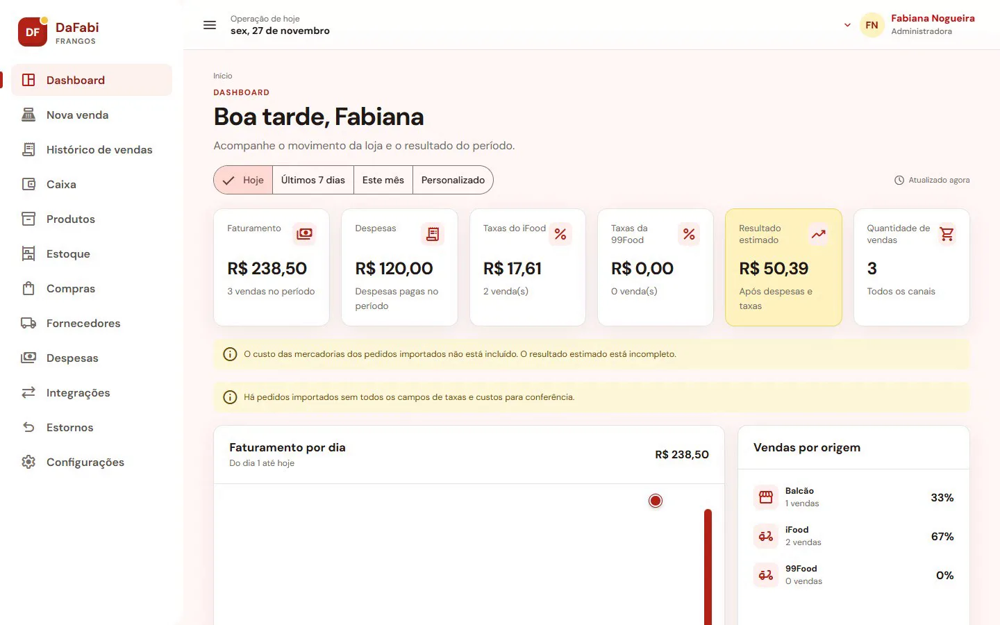
Fontes: README do projeto; README da API (regras de estoque, caixa, vendas, estorno e compras); README do front (perfis e acessos de demonstração)
Como rodar localmente
Pré-requisitos: Java 21 ou superior, PostgreSQL (o projeto traz um docker-compose), Node.js 20.19+ ou 22.12+ e pnpm 10+.
- Em
Codigo/back, suba o banco:docker compose -f src/main/resources/db/docker-compose.yml up -d. - Ainda em
Codigo/back, rode a API no perfil de desenvolvimento:./mvnw spring-boot:run -Dspring-boot.run.profiles=dev(no PowerShell,.\mvnw.cmd). A API fica emhttp://localhost:8080/api/v1. - Em
Codigo/front, rodepnpm installepnpm start. Abrahttp://localhost:4200.
O perfil dev cria os usuários de demonstração e alguns produtos. O perfil padrão é prod e exige a variável JWT_SECRET.
Na gravação deste material não havia Docker na máquina: o banco foi um PostgreSQL 16 descartável iniciado à parte, com o mesmo banco, usuário e senha do docker-compose.
Fontes: README da API (regras de estoque, caixa, vendas, estorno e compras); README do front (perfis e acessos de demonstração); Gravação do sistema em execução local em 27/11/2026, com dados sintéticos
Entrada e perfis de acesso
A tela de entrada aceita usuário ou e-mail e senha. Em ambiente de demonstração, os cartões em Acessos para demonstração entram com um toque:
- Administradora (
admin/admin123): Fabiana Nogueira, vê todos os módulos. - Operador de caixa (
caixa/caixa123): Carlos Oliveira, vê Nova venda, Histórico de vendas, Caixa, Produtos e Estoque.
Se o operador abrir uma área de outro perfil pelo endereço, como o Dashboard, a tela mostra "Acesso não permitido". Os usuários de demonstração devem ser removidos e as senhas trocadas antes do uso real na loja.
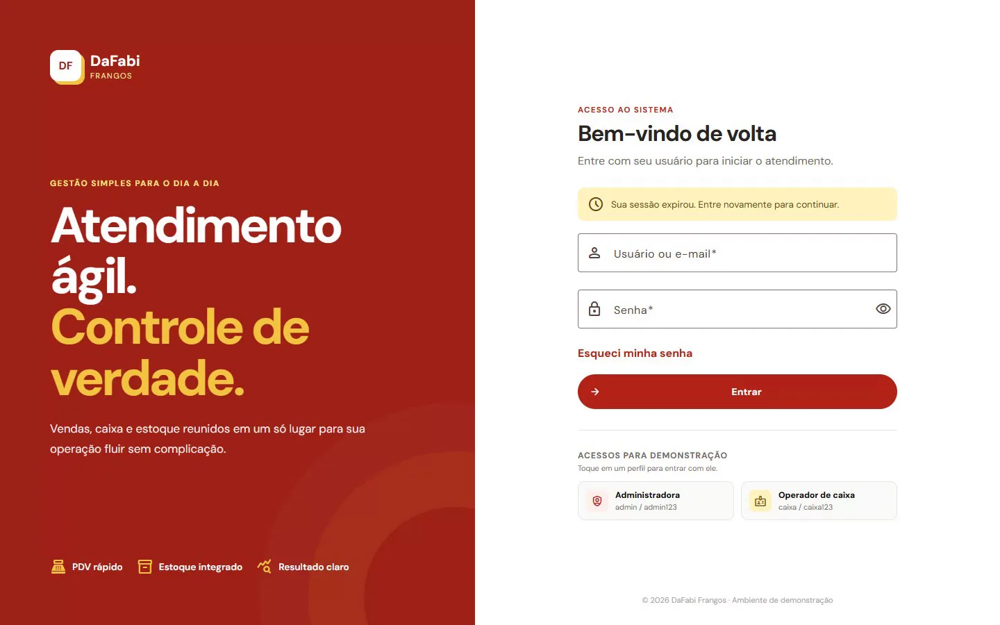
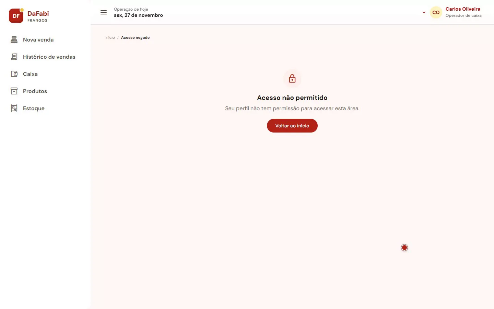
Fontes: README do front (perfis e acessos de demonstração); README da API (regras de estoque, caixa, vendas, estorno e compras); Gravação do sistema em execução local em 27/11/2026, com dados sintéticos
Produtos
Em Produtos > Novo produto, informe nome, categoria, unidade de venda, preço de venda, custo, quantidade inicial em estoque e, se houver, código de barras. Duas opções mudam o comportamento:
- Produto perecível: o estoque passa a ser controlado por lote e validade.
- Exibir nos produtos frequentes do PDV: o produto vira um botão na tela de venda.
Produtos sem código de barras podem ser vendidos pela pesquisa ou pelos botões visuais. O catálogo filtra por categoria e por status (ativos e inativos).
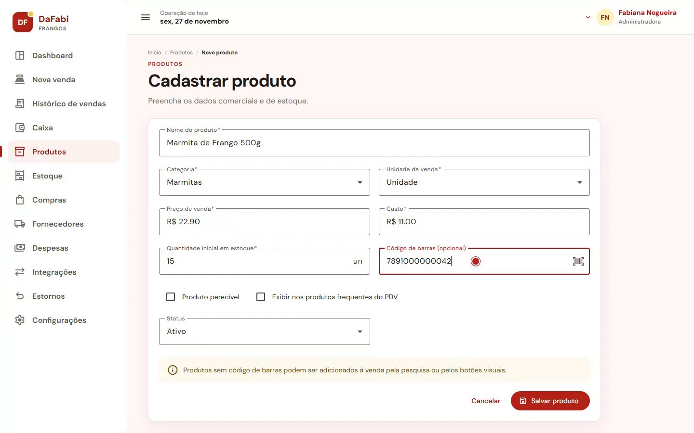
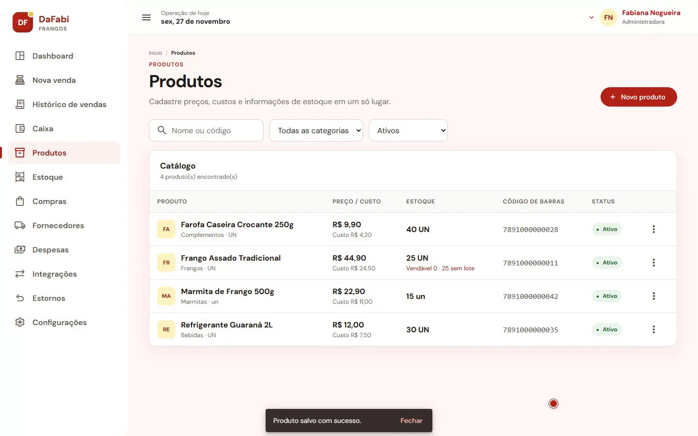
Fontes: README da API (regras de estoque, caixa, vendas, estorno e compras); Documento de Interface da Sprint 5; Gravação do sistema em execução local em 27/11/2026, com dados sintéticos
Fornecedores e compras
Fornecedores. Cadastre nome, telefone com DDD, e-mail opcional, observações e status. O e-mail é único por loja e o fornecedor é inativado, nunca excluído. Na lista, telefone e e-mail são links clicáveis.
Compras. Em Compras > Nova compra, escolha o fornecedor, a data e os itens com quantidade e custo unitário. Para produto perecível, o sistema pede Lote recebido e Validade. O valor total é calculado. Ao registrar, a quantidade é somada ao estoque, o custo médio é atualizado e o lote é criado, tudo na mesma transação; um item inválido rejeita a compra inteira.
A compra fica com pagamento Pendente. Use Pagar e escolha a forma (Dinheiro, Pix, Débito, Crédito ou Boleto/transferência). Só o pagamento em dinheiro movimenta o caixa.
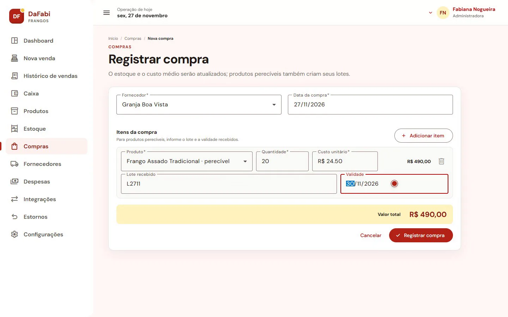

Fontes: README da API (regras de estoque, caixa, vendas, estorno e compras); Gravação do sistema em execução local em 27/11/2026, com dados sintéticos
Estoque e perecíveis
Posição de estoque mostra o saldo, o custo e a origem da última movimentação de cada produto. Toda alteração manual é feita em Novo ajuste (ou Ajustar na linha): informe a nova quantidade e um motivo de pelo menos 5 caracteres; o sistema registra a diferença, o usuário e a data.
Perecíveis lista lote, data de entrada, validade, quantidade e status. Registrar um lote também soma ao saldo do produto. Um saldo de perecível sem lote não pode ser vendido: o aviso amarelo indica o produto e o botão Vincular saldo associa esse saldo a um lote depois da contagem.
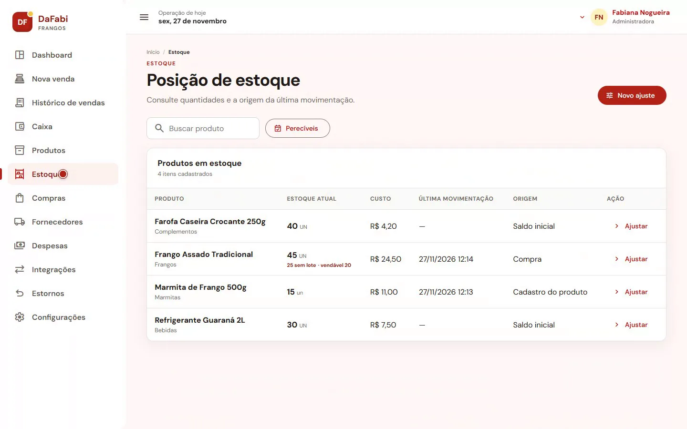

Fontes: README da API (regras de estoque, caixa, vendas, estorno e compras); Gravação do sistema em execução local em 27/11/2026, com dados sintéticos; Pendências para homologação na loja
Caixa: abertura e fechamento
A venda só é concluída com caixa aberto, e há um único caixa aberto por loja.
Abrir. Em Caixa > Abrir caixa (ou pelo aviso "Caixa fechado" no PDV), conte o dinheiro e informe o Saldo inicial. Uma confirmação mostra o valor antes de abrir.
Resumo. Mostra saldo inicial, vendas, despesas, compras e estornos em dinheiro, o Saldo esperado e as movimentações recentes.
Fechar. Em Fechar caixa, informe o Valor contado. O sistema calcula a diferença para o saldo esperado; se houver diferença, a Justificativa da diferença é obrigatória. Depois de confirmar, o caixa fica fechado para novas vendas e o resumo guarda esperado, contado, diferença e justificativa.

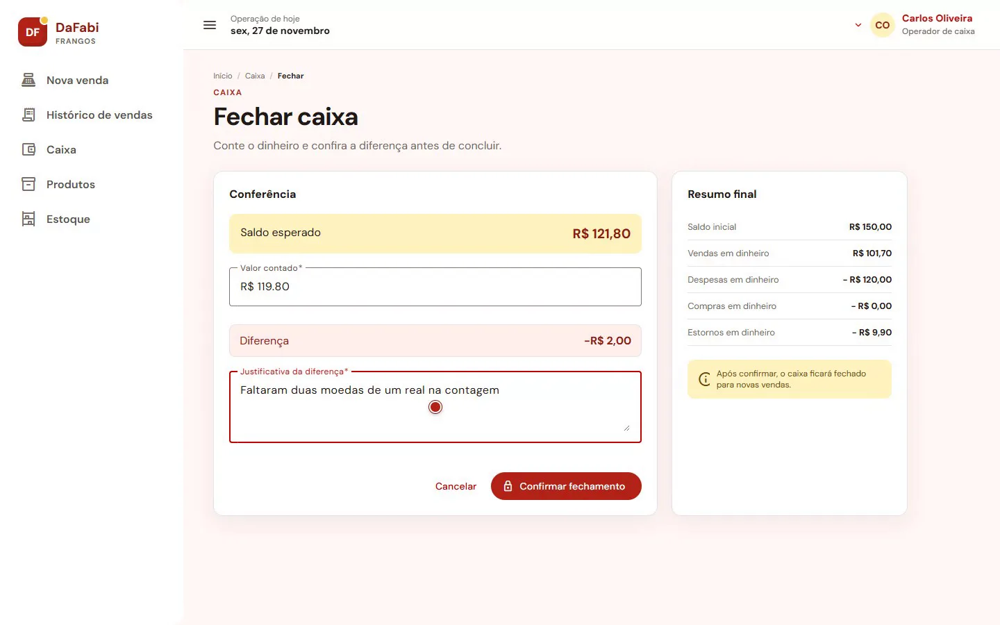

Fontes: README da API (regras de estoque, caixa, vendas, estorno e compras); Gravação do sistema em execução local em 27/11/2026, com dados sintéticos
Venda no PDV
Em Nova venda, adicione itens pelo Código de barras (leitor ou digitação e Enter), pela Pesquisa de produtos ou pelos botões de Produtos frequentes. No carrinho, ajuste a quantidade com mais e menos. Continuar para pagamento (atalho F2) abre o pagamento: escolha Dinheiro, Pix, Débito ou Crédito. Em dinheiro, digite o valor recebido ou use os atalhos (Valor exato, R$ 100, R$ 200); o troco aparece na hora.
Ao confirmar, o total é recalculado na API pelo preço cadastrado, o estoque de cada item é baixado e, se o pagamento for em dinheiro, a entrada vai para o caixa. A venda usa chave de idempotência para não ser duplicada e bloqueia o estoque para não vender acima do disponível.


Fontes: README da API (regras de estoque, caixa, vendas, estorno e compras); README do front (perfis e acessos de demonstração); Gravação do sistema em execução local em 27/11/2026, com dados sintéticos
Histórico de vendas e estorno
Histórico de vendas separa vendas de balcão e pedidos de marketplace, com filtros de período, origem, pagamento e status.
Estorno é exclusivo da administradora. Em Estornos > Novo estorno, busque pelo número da venda, confira os itens e informe o motivo (5 a 500 caracteres). O sistema avisa o valor que será revertido no caixa. Ao confirmar, na mesma transação, os itens voltam ao estoque, sai do caixa exatamente o valor que entrou em dinheiro (Pix e cartão não movimentam o caixa) e a venda fica como estornada. Cada venda aceita um único estorno, e o registro guarda o responsável e o motivo.
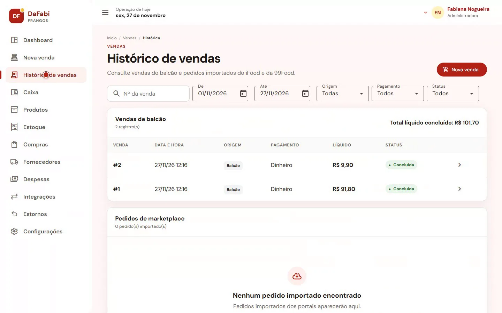

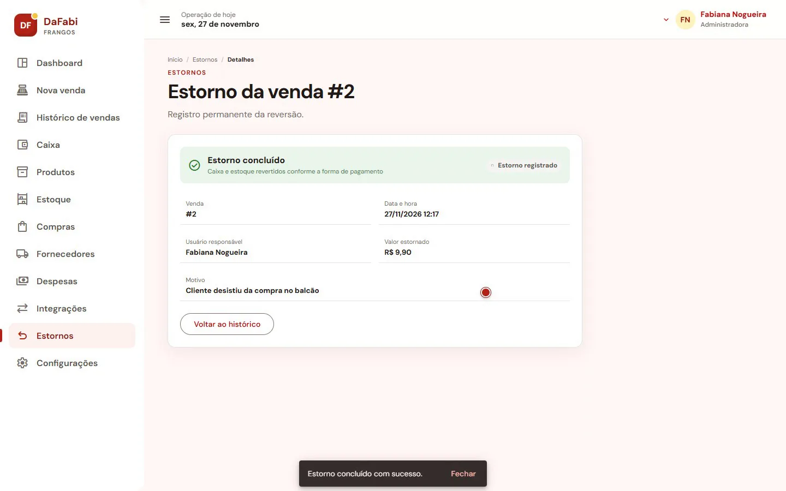
Fontes: README da API (regras de estoque, caixa, vendas, estorno e compras); Gravação do sistema em execução local em 27/11/2026, com dados sintéticos
Despesas
Em Despesas > Nova despesa, informe descrição, categoria (Operacional, Materiais, Serviços ou Outros), valor, data, forma de pagamento e observação. A despesa nasce Pendente e não entra no resultado nem no caixa. Use Marcar como paga quando pagar: ela passa a contar no resultado estimado e, se foi em dinheiro, sai do caixa aberto. O topo da tela soma as despesas pagas no período.


Fontes: Gravação do sistema em execução local em 27/11/2026, com dados sintéticos; README da API (regras de estoque, caixa, vendas, estorno e compras)
Integrações iFood e 99Food
Em Integrações, cada plataforma tem a importação manual do relatório exportado do portal (XLSX ou ZIP, até 10 MB). Depois de Analisar relatório, a Prévia da importação mostra pedidos lidos, concluídos, cancelados, valores, taxas, repetidos e linhas inválidas, e a validação de cada linha. Os pedidos só são gravados em Confirmar este arquivo. Pedidos repetidos são atualizados, não duplicados.
A importação não movimenta o caixa nem o estoque. O vínculo dos itens exportados com os produtos DaFabi é feito uma vez por loja e item. Na demonstração foi usado um relatório sintético; a conferência com relatórios reais está listada nas pendências de homologação.

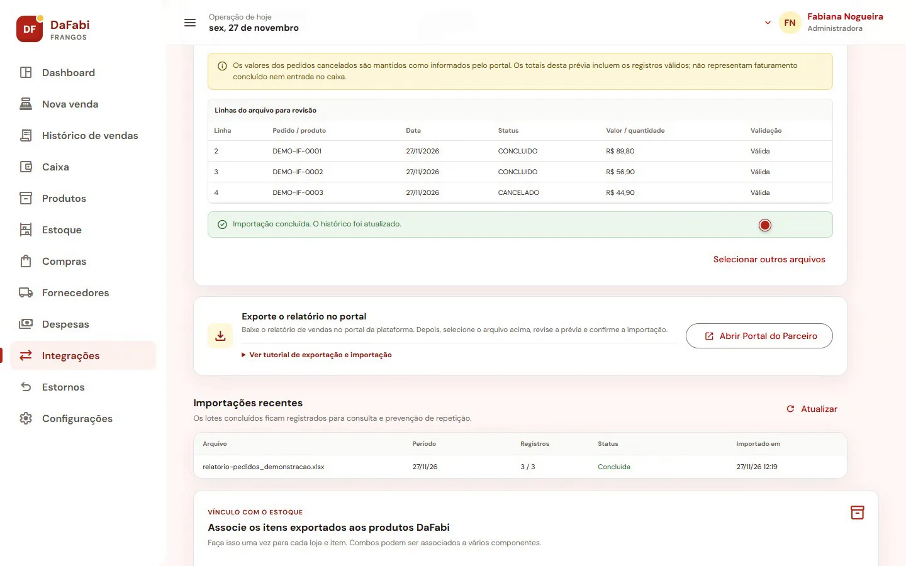
Fontes: Gravação do sistema em execução local em 27/11/2026, com dados sintéticos; Pendências para homologação na loja; README do projeto
Dashboard financeiro
O painel da administradora consolida vendas concluídas, despesas pagas e movimentos de caixa no período (Hoje, Últimos 7 dias, Este mês ou Personalizado). Mostra faturamento, despesas, taxas do iFood e da 99Food, resultado estimado, quantidade de vendas, faturamento por dia, vendas por origem, vendas recentes e a composição do resultado.
O painel avisa quando o resultado está incompleto: o custo das mercadorias dos pedidos importados ainda não é reconhecido. Períodos sem dados retornam totais zerados.
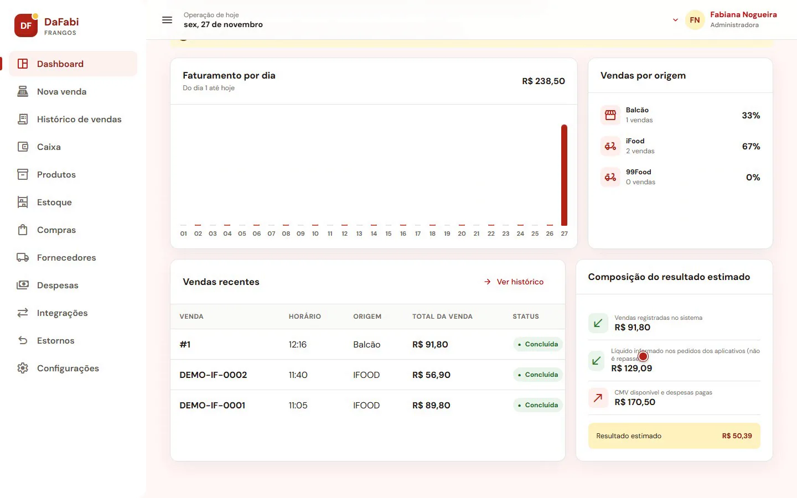
Fontes: README da API (regras de estoque, caixa, vendas, estorno e compras); Gravação do sistema em execução local em 27/11/2026, com dados sintéticos; Pendências para homologação na loja
Configurações
Em Configurações, a administradora mantém os dados da loja (nome, telefone, endereço), a forma de pagamento sugerida no PDV e o modo compacto das tabelas. A mesma área tem as seções Usuários e Perfis e permissões.
Fontes: Gravação do sistema em execução local em 27/11/2026, com dados sintéticos; Documento de Interface da Sprint 5
Limites e pendências conhecidas
- O sistema ainda não deve ser o controle principal da loja: as verificações de homologação (contagem inicial, relatórios reais do iFood e 99Food, testes concorrentes, leitor físico e a meta de uma venda de três itens em até 60 segundos) estão pendentes.
- Defeito observado na gravação: logo após o login, a consulta do caixa sai antes do token e falha. Até recarregar a página, o PDV pode mostrar "Caixa fechado" com o caixa aberto e a tela de login pode exibir "Sua sessão expirou" no primeiro acesso.
- A interface carrega fontes do Google; sem internet, a aparência muda.
Fontes: Pendências para homologação na loja; Gravação do sistema em execução local em 27/11/2026, com dados sintéticos